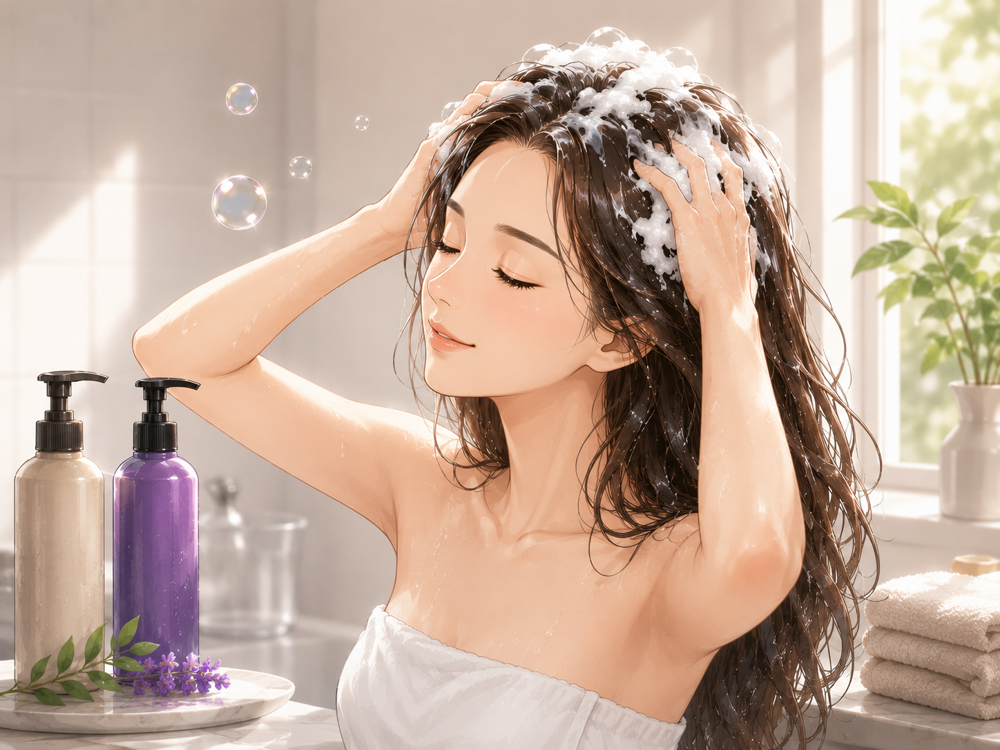
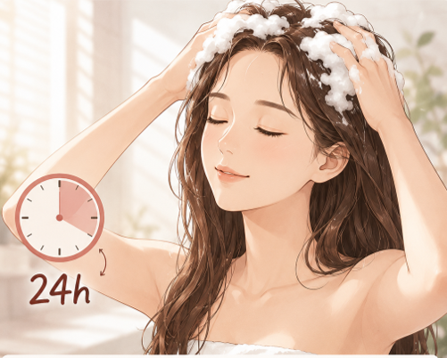
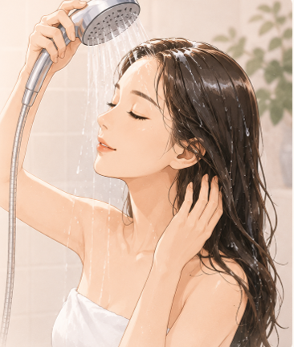
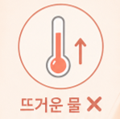
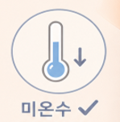
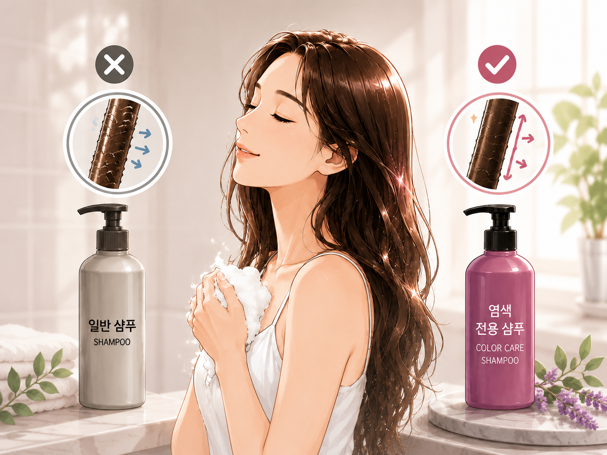
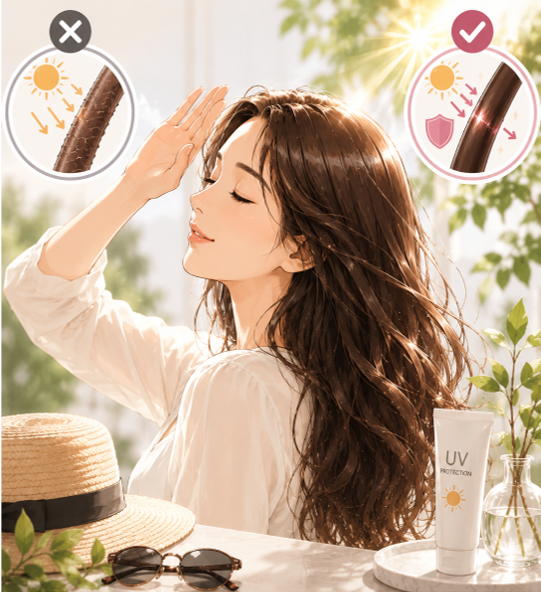
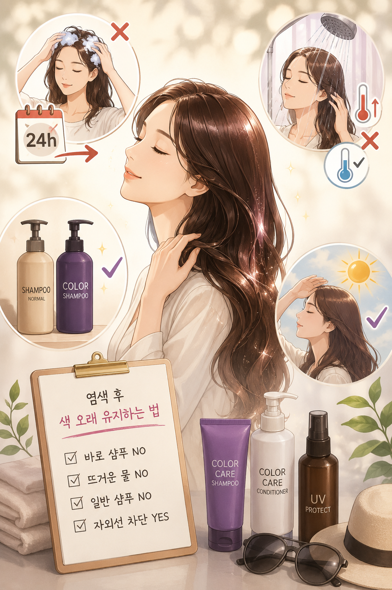

COLOR CARE GUIDE
염색 후 색이 금방 빠진다면
이 4가지 습관 때문입니다
25년 현장 경험으로 정리한 컬러 오래 유지하는 법

25년 현장 경험으로 정리한 컬러 오래 유지하는 법
원인은 염색약이 아니라 관리 습관에 있는 경우가 대부분입니다.

이런 분께 특히 도움이 됩니다
무심코 하는 이 습관들이 컬러를 빠르게 바래게 만듭니다.

염색 직후에는 모발 큐티클이 완전히 닫히지 않은 상태입니다. 이때 바로 샴푸를 하면 색소가 미처 자리 잡기도 전에 씻겨 나갑니다.



뜨거운 물은 큐티클을 더 크게 열어버립니다. 큐티클이 열린 채로 반복해서 감으면 색소가 그만큼 더 빨리 빠져나갑니다.

일반 샴푸는 세정력이 강해서 색소까지 함께 씻어냅니다. 염색모용 성분이 없으면 색이 빠지는 속도를 잡아줄 수 없습니다.

햇빛은 색을 가장 빨리 바래게 만드는 원인입니다. 자외선에 그대로 노출되면 아무리 관리를 잘해도 색이 금방 탁해집니다.
이 순서대로만 해도 컬러가 훨씬 오래 갑니다.

염색은 컬러를 입히는 순간보다
그 이후 관리가 더 중요합니다.
네 가지 습관만 바꿔도
컬러 유지 기간이 확실히 달라집니다.
더 자세한 상담이 필요하시다면